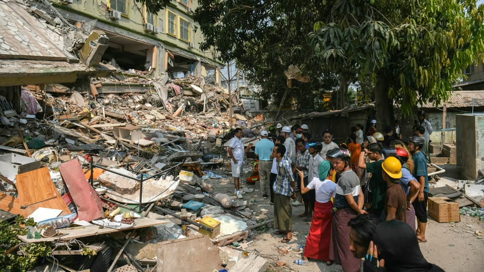

世界苦茶03月30日新闻 | 31条 | 中国希望用朝鲜无核化拉拢日韩

中国希望用朝鲜无核化拉拢日韩 | 乌克兰开始进攻别尔歌罗德 | 美防长带妻子涉及多场敏感会议 | 抗议Tesla活动席卷全球 | 国民党再次多人访问中国
苦茶数据
美元兑人民币：7.27（昨日7.27，前日7.26）
美元兑日元：150.06（昨日150.81，前日150.16）
上证指数：休市（昨日3351，前日3349）
标普500指数：休市（昨日5580，前日5693）
比特币：83825（昨日86780，前日87529）
布伦特原油：73.63（昨日74.01，前日73.88）
中国新闻
• 中国严打医保套现乱象 ：中国央视播出了调查报道，曝光了“医保取现”背后的“回流药”销售网。中国国家卫生健康委要求，责成各地加强对医疗机构监管，持续严厉打击违法违规行为。中国卫健委负责人说，按照《医疗机构药事管理规定》要求，医疗机构必须制订本机构药品采购工作流程；建立健全药品成本核算和账务管理制度；严格执行药品购入检查、验收制度；不得购入和使用不符合规定的药品。中国卫健委对此类违法行为保持“零容忍”态度，将协同医保、药监等部门，责成武汉等地压实属地责任，加强对医疗机构穿透式监管，持续严厉打击违法违规行为，切实保障人民群众健康权益。
• 中缅边境启动应急通关 ：缅甸发生强烈地震后，中缅边境启动震后应急通关协调机制，确保救援物资快速验放通关。据央视新闻报道，缅甸星期五发生强震后，截至星期六早上11时，中缅边境各口岸通关正常。目前，海关已启动震后应急通关协调机制，现场安排关员24小时值班，及时开通“绿色通道”，确保救援物资、救援人员、入境就医人员第一时间快速验放通关。
• 国民党夏立言赴陆访问 ：台湾在野的国民党副主席夏立言星期六率团前往中国大陆访问七天，预计将在此期间与大陆官员会面。据台湾《联合报》报道，夏立言率团于3月29日至4月4日访陆，一行人星期六中午从桃园机场启程前往大陆。这是在野党高层今年首次访问大陆。报道称，夏立言一行预计将访问河南和江苏两地，主要行程包括前往河南郑州参加黄帝故里拜祖大典，以及赴江苏南京中山陵谒陵，期间预计将与大陆官员举行会晤。
• 习近平致电慰问缅甸地震 ：中国国家主席习近平就缅甸地震向缅甸领导人敏昂莱致慰问电。据新华社报道，习近平星期六就缅甸遭受地震灾害向敏昂莱致慰问电时表示，惊悉缅甸遭受强烈地震灾害，造成重大人员伤亡和财产损失。“我谨代表中国政府和中国人民，对遇难者表示深切哀悼，向遇难者家属、受伤人员和灾区民众致以诚挚慰问”。习近平说，中方愿向缅方提供需要的帮助，支持灾区人民早日战胜灾害、重建家园。
• 马英九基金会大陆交流 ：台湾马英九基金会星期五率领青年学子赴中国大陆访问。基金会执行长萧旭岑说，两岸情势越严峻，交流更为重要，唯有通过交流拉近两岸民心距离，降低民间对立情绪，才能避免发生冲突甚至是战争。综合台湾《联合报》《自由时报》报道，马英九基金会执行长萧旭岑星期五率领30名大九学堂学员，访问中国大陆山东省。除了与山东的大学生交流外，也将参加孔子文化春会祭孔活动，并参访历史和文化景点。萧旭岑指出，台湾总统赖清德祭出“赖17条”后，用行政手段限缩两岸交流，也限制人民的各项自由与权利，尤其用意识形态扭曲“中华民国”宪法，将中国大陆视为“境外敌对势力”，把两岸推向准战争边缘。
• 解放军南海巡航批菲方 ：中国解放军南部战区星期五在南中国海海域进行巡航，并批评菲律宾频繁拉拢域外国家组织联合巡航，蓄意破坏地区和平稳定，“引入外部势力撑腰注定徒劳无益”。据“南部战区”微信公号消息，南部战区新闻发言人田军里说，解放军南部战区星期五在位于南中国海海域进行例行巡航。他说，菲律宾频繁拉拢域外国家组织所谓“联合巡航”，鼓噪散播南中国海非法主张，制造南中国海不稳定因素，蓄意破坏地区和平稳定。
• 李强要求遏制拖欠企业款 ：中国总理李强主持召开国常会时强调，要坚决遏制新增拖欠企业账款。据新华社报道，李强星期五主持召开中国国务院常务会议，听取推进跨境电子商务综合试验区建设汇报，部署加快加力清理拖欠企业账款工作，研究推动农机装备高质量发展措施，审议通过《关于优化口岸开放布局的若干意见》。对于推进跨境电子商务综合试验区建设，会议指出，要做好新一轮跨境电商综合试验区扩围工作，进一步拓宽覆盖面。要推动跨境电商综合试验区建设提档升级，推进通关、税务、外汇、数据流动等监管创新，用好相关稳外贸支持政策，帮助企业拓市场、树品牌、更好发展。
亚太印太新闻
• 中国正考虑与日本、韩国联手，使朝鲜无核化： 据中国知情人士周六称，中国已制定了加强与日本和韩国在朝鲜无核化问题上合作的方案，试图破坏这两个亚洲邻国与美国的三边关系。消息人士称，中国政策制定者也认为，由于美国总统唐纳德·特朗普对多边框架的蔑视可能会影响日韩与华盛顿的三边伙伴关系，北京方面有机会与日韩接触。特朗普在今年 1 月开始的第二任期内恢复了“美国优先”政策，同时还表示他打算与朝鲜领导人金正恩重新接触，他在第一个总统任期内曾三次与金正恩会面，强调他倾向于双边方式。
• 亚细安拟援助缅甸赈灾 ：亚细安外长星期六说，亚细安深知缅甸发生大地震后急需人道援助，并准备支持缅甸的灾后重建工作。亚细安外长在联合声明中说：“亚细安申明其团结立场，并将密切合作，协调人道援助，支持和促进救援行动，确保人道援助及时和有效地展开。”缅甸是在星期五发生7.7级强烈地震，震央位于中部主要城市曼德勒附近，首都内比都和第一大城市仰光震感强烈。
• 外国救援队抵缅甸灾区 ：外国救援队陆续抵达缅甸，协助搜寻地震幸存者。地震罹难者已过千，正受内战冲击的缅甸关键基础设施遭受破坏。缅甸国家管理委员会星期六说，截至目前，全国地震死亡人数为1002人，受伤人数为2376人，失踪30人。死伤者数目较官方媒体最初报道的144人大幅增加。星期五的7.7级地震也撼动了邻国泰国的建筑物，摧毁了首都曼谷一座在建的摩天大楼，30人受困在废墟下，49人失踪。
• 联合国动员东南亚地震援助 ：联合国机构正在动员力量，向受地震影响的东南亚民众提供援助。缅甸领导人敏昂莱说，缅甸中部的强烈地震已致144人死亡、732人受伤。敏昂莱同时呼吁各国、各组织和民众对缅甸地震灾区提供援助。新华社引述敏昂莱星期五在媒体的讲话说：“我郑重邀请所有国家、组织、民众，只要愿意帮助缅甸受灾群众，我们都真挚欢迎。”他还说，由于需要广泛开展救援工作，希望缅甸民众尽其所能伸出援手。当地时间28日中午12时50分许，缅甸中部发生7.7级地震，震源深度10公里。地震造成重大人员伤亡，导致缅甸多地大量建筑物遭到损毁，除震中缅甸，泰国、孟加拉国、老挝、印度、中国等邻近国家均有震感。
• 台湾准备赴缅甸救灾 ：台湾消防署已在待命，准备赴缅甸协助救灾。针对是否派出救援队赴缅甸参与救灾工作，台湾外交部星期六在官网回应称，台驻泰、缅两代表处均已在第一时间向两国政府表示，愿派遣搜救队协助两国赈灾，相关人员和装备均已整备完成，随时可出发。外交部说，泰、缅两国政府鉴于当地现况、客观基础条件和接待国际救援团队的整体规划和后勤支援能力，仍有若干困难待克服，故暂未回回复台方派遣搜救队需求。台驻泰、缅两代表处将持续向两国政府表达台湾援助意愿，追踪相关进展。
科技新闻
• 马斯克旗下xAI收购X ：美国企业家马斯克宣布，他旗下的人工智能初创公司xAI以全股票交易方式收购社交媒体平台X。马斯克星期五在X发布这一消息。贴文显示，合并后的xAI估值为800亿美元，X的估值为330亿美元。新华社引述马斯克的贴文说，“xAI和X的未来紧密相连。今天，我们正式迈出将数据、模型、计算、分发渠道和人才结合起来的步伐”，两家公司的合并“将xAI先进的人工智能能力和专业知识与X的庞大影响力相结合”。
• 黑石拟入股TikTok美业务 ：美国私募基金黑石集团据报正评估小额入股短视频平台TikTok在美业务。路透社星期五引述两名知情人士报道上述消息。据报道，黑石集团正商讨与TikTok母公司字节跳动现有非中国投资者海纳国际集团和泛大西洋投资集团，联手为TikTok在美业务注入新资金。这组非中国投资者提议另设一个实体运营TikTok在美业务，稀释新业务的中资控制权，达到美国法律规定的低于20%门槛。
• 三星显示器诉中企“京东方”专利侵权案胜诉： 美国国际贸易委员会判定韩国三星显示器起诉中国最大的显示器企业京东方专利侵权的案件，三星胜诉。此次判决距离2022年12月提起诉讼时隔两年零三个月。美国国际贸易委员会当地时间19日最终判决称：“京东方擅自使用了三星显示器的3项专利。”三星显示器2022年称，在美国流通的用于维修智能手机液晶的京东方的 OLED 面板盗用了三星的“钻石像素”等5项专利。但此次诉讼只判定是否侵犯专利权，京东方没有当即赔偿三星的义务。但预计本次判决将对美国得克萨斯州东部地区法院正在审理的三星诉京东方的专利民事诉讼结果产生较大影响。
财经新闻
• 世卫裁员应对资金削减 ：据路透社看到的一份内部备忘录，世界卫生组织计划减少工作人员和工作规模。受美国削减资金影响，WHO将预算削减21%。美国总统特朗普1月上任时宣布退出WHO，称它在处理冠病大流行和其他国际健康危机上存在失误。美国是WHO最大资助方，贡献了总资金的约18%。这份日期为3月28日，由总干事谭德赛签署的备忘录写：“美国的声明，加上一些国家最近减少对外发展援助以增加国防开支，使我们的情况更加严峻。”
• 小鹏拟推飞行汽车 ：中国电动汽车小鹏董事长、CEO何小鹏星期六说，公司正研发全球首款分体式飞行汽车，期望在2026年量产交付。综合新浪财经和腾讯新闻报道，何小鹏出席中国电动汽车百人会论坛发表演讲时介绍，公司的飞天在做两种飞行，第一种飞行是分体式飞行。他说，有很多朋友是买得起飞机的，但是为什么不买，最重要的不是贵，而是你没办法用，你存储很麻烦，使用很麻烦，驾照很麻烦，这全部都是挑战。
• 特朗普推进关税升级 ：知情者披露，美国总统特朗普敦促他的高级顾问在关税问题上采取更激进的立场，因为进口关税代表着美国经济的世代机遇。特朗普宣布的对等关税过几天就会生效。《华盛顿邮报》星期六引述四名知情人士的话说，特朗普政府正为全球贸易战的重大升级做准备。报道称，尽管华尔街和特朗普在国会的盟友呼吁他采取更慎重的态度，但特朗普一直在推动旨在重塑美国经济的全面贸易行动。
• 美股三日连跌科技股重挫 ：美国股市因关税担忧等多种因素而三天连跌，纳斯达克指数和标普500指数星期五进一步挫跌2.70％和1.97％，跌至17322.99点和5580.94点；道琼斯指数也跌1.69％至41583.90点。科技股面对最大抛压，英伟达和美股七巨头其他成员连同一些不赚钱的科技股都承压下滑，而云计算公司CoreWeave首日交易表现则不如预期。标普500指数和纳斯达克指数本月都已下跌至少6％。美股七巨头是微软、苹果、英伟达、Alphabet、亚马逊、Meta和特斯拉。
• 贸易战担忧金价创新高 ：全球贸易战担忧促使金价星期五再创新高，现货金价上涨0.91％至每安士3085.12美元，期货金价则涨0.76％至每安士3114.30美元。由于担心美国总统特朗普的最新关税将加剧全球贸易战，投资者纷纷涌向避险资产，现货和期货金价星期五都创下历史新高。金价本周已涨超过2％，本月涨幅达8％，今年来已连涨三个月。
• 法国干邑关税调查延期 ：法国外交部长巴罗在中国访问时说，中国同意将对法国干邑的反倾销调查再延长三个月。综合法新社和路透社报道，巴罗星期五受访时说：“在我抵达北京前，法国干邑行业面对中国采取的临时反倾销关税措施。这趟访华行程结束时，我可以确认，有很大概率会出现反倾销调查时限再延长三个月的情况。这是迈向解决纠纷的第一步。”巴罗说，这么做不会解除法国干邑行业现有所面对的关税措施，但能让它们在关税确定落实前有“喘息的空间”。法国官员和干邑业者能在这段时间设法加大游说力度，从而获得有利的结果。
• 美国贫富差距进一步扩大 ：根据美国联邦储备局最新数据，截至2024年底，美国最富有的一半家庭拥有全国约97.5%的财富，而另一半家庭持有的财富仅占2.5%。在拜登任总统期间，财富分布中靠后的50%家庭财富占比略有提高，从2.2%升至2.5%。截至去年年底，该群体6660万户家庭总计持有约4万亿美元的净财富，较四年前增加了1.25万亿美元。彭博社指出，构成最靠前0.1%的13.3万户美国家庭同期净财富增加6万亿美元以上，主要得益于公司股票和共同基金股票价值的飙升。
• 两人造谣中国央行降息被查 ：中国央行公布，两人发布降息谣言，涉嫌扰乱金融秩序，被属地公安机关依法查处。据“中国人民银行”微信公众号星期五消息，近期，互联网上传播一则有关降息的虚假不实信息引发关注。中国人民银行会同公安机关网安部门，依法打击整治恶意编造涉金融领域网络谣言违法行为。中国央行称，39岁的黄姓女子、42岁的聂姓男子为博取关注、吸粉引流，假借财经媒体和信息服务机构名义发布降息谣言，误导公众认知，涉嫌扰乱金融秩序。目前，相关人员已被属地公安机关依法查处。
• 巴西与越南拓展经贸合作 ：巴西总统卢拉星期五与越南国家主席梁强举行会谈，探讨出口巴西航空工业制造的客机，并看好越南可成为巴西肉类加工业务的区域中心。卢拉星期四起到越南进行为期三天的正式访问。他星期五与梁强会面时，讨论了两国在经贸等领域的合作。梁强在会后的联合记者会上说，越南正认真考虑从巴西进口牛肉。对此，卢拉说：“如果越南开放市场进口巴西牛肉，将吸引巴西肉类加工商的投资，进而将越南打造成东南亚的出口中心。”
俄乌战争
• 乌军进攻别尔哥罗德 ：俄罗斯军事博客透露，乌克兰军队失去去年占领的俄库尔斯克州的控制后，已转向进攻邻近的别尔哥罗德州。泽连斯基没有确认进攻地点，但称这是为了防止俄军大规模集结。数名俄罗斯军事博客星期五说，乌军已进入别尔哥罗德州，与驻守当地的俄军交火。其中，军事博客“莱巴”称，俄乌军队在该州的波波夫卡定居点发生激烈冲突，双方都出动了无人机。即时通讯平台Telegram上，一个以“两个少校”为名的账号则称，俄军正在别尔哥罗德州进行防御行动。“两个少校”写道：“乌军集结地不断遭到袭击，但敌人仍有发起强攻的潜力，而且没有计划放弃进一步突破防线，包括前线的新地区。”
其他新闻
• 哈马斯3月29日称，已积极处理并批准了斡旋方的提议，希望以色列不要阻挠并挫败斡旋方努力： 哈马斯已表明其立场，即遵守已签署协议，“不想要任何新的东西”。以色列总理办公室同日表示，总理内塔尼亚胡28日晚根据斡旋方提议举行了一系列磋商，29日以方向斡旋方“提出了自己的方案”，此举已与美国“充分协调”。埃及本周早些时候提出，哈马斯释放5名活着的人质，以换取数周停火、允许人道物资进入加沙以及以色列释放数百名巴勒斯坦囚犯。但据多家媒体报道，以色列坚持要求归还10至11名人质才能恢复停火，而这一要求是美国中东问题特使威特科夫此前提出的。
• 美要求法企停多元计划 ：路透社报道，特朗普政府已命令一些与美国政府有合同的法国公司，遵守它禁止多元化、公平和包容计划的行政命令。这凸显美国政策在域外的影响力，以及对欧洲企业行为的潜在影响。这些法国公司被要求在一份名为“关于遵守联邦反歧视法的认证”问卷上，确认它们的合规情况。这引发了相关公司须要实施哪些实际变革的疑问，因为美国和法国在DEI问题上采取的不同立场。
• 美防长带妻涉敏感会议 ：美国防长赫格塞斯涉及的作战计划外泄事件尚未平息，美国媒体又爆出他曾带着妻子参加与外国军方高层的两次会议，并在会上讨论了敏感信息。赫格塞斯的妻子珍妮弗是福克斯新闻前导播。《华尔街日报》引述知情者的话说，她出席的其中一场会议是3月6日在五角大楼赫格塞斯与英国防长希利的高层会谈。会上讨论了美国停止与乌克兰共享军事情报的决定，以及英美未来的军事合作。此外，珍妮弗也参加了2月在布鲁塞尔举行的北约会议，盟国防务官员当时讨论了对乌克兰的支持。
• 哥大校长辞职风波升级 ：哥伦比亚大学临时校长卡特里娜·阿姆斯特朗3月28日宣布辞职并返回原岗位。校董会联合主席克莱尔·希普曼将担任代理校长。特朗普政府上台后，以哥大未采取足够措施打击反犹太主义为由，暂停提供哥大及其医院的研究资金。特朗普政府近期还采取行动，驱逐多名参加亲巴勒斯坦示威活动的学生。哥大很快同意整改，包括同意审查其招生政策、禁止抗议者戴口罩、禁止在学术楼内举行示威活动，并任命高层管理人员监管中东研究系。此举引发部分教职员工和言论自由倡导者的不满。此外，由于特朗普政府给学术界带来的巨大影响，《自然》杂志的调查显示，约75%的受访科学家正在考虑离开美国，欧洲和加拿大是首选目的地。
• 美国国务院通知国会正式关闭国际开发署： 特朗普总统的政府周五通知国会，将裁撤美国国际开发署几乎所有的剩余职位，并关闭该机构。美国国际开发署数千名工作人员和派驻该机构的外交官在一份内部备忘录中被告知，所有不在法定要求之列的职位将在七月和九月被裁撤。这份备忘录是该机构代理副署长杰里米·卢因发出的，他也是负责削减政府开支的政府效率部的成员。上个月，马斯克领导的政府效率部已完成对国际开发署的第一轮裁员。美国国务院向国会发出的裁员通知显示，国际开发署在全球的各个办事处也将被关闭，其职能将并入国务院。
• 抗议活动席卷全球特斯拉经销店，挑战伊隆·马斯克： 周六，全球数千人抗议伊隆·马斯克及他与唐纳德·特朗普联手拆散美国联邦政府的行为，几乎美国每家特斯拉展厅前都举行了集会，全球各地也有许多集会地点——共同谴责这位亿万富翁作为这家电动汽车制造商的首席执行官的雄厚财力。抗议组织者要求人们做三件事：不要购买特斯拉、卖掉特斯拉股票并加入“打压特斯拉”运动。该组织的其中一句标语写道：“伤害特斯拉就是阻止马斯克。阻止马斯克将有助于拯救生命和我们的民主。”周六，全球计划举行 200 多场活动，抗议活动于中午在澳大利亚和新西兰的特斯拉展厅前拉开帷幕，随后蔓延至芬兰、挪威、丹麦、德国、法国、荷兰和英国等欧洲国家。